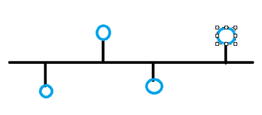
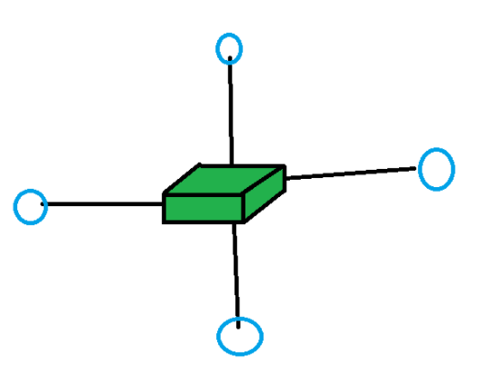
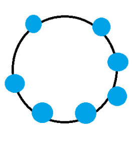

| Номер | Рисунок | Краткое описание |
|---|---|---|
| 1. |
 |
Шина Все устройства подключаются к одному общему кабелю (магистрали). Данные, передаваемые одним устройством, поступают на все остальные. Завершающие элементы (терминаторы) на концах кабеля предотвращают отражение сигнала. |
| 2. |
 |
Звезда Самая распространенная топология. Все устройства подключаются к центральному коммуникационному узлу (концентратору, коммутатору). Выход из строя одного устройства не влияет на сеть. Поломка центрального узла останавливает всю сеть. |
| 3. |
 |
Кольцо Устройства соединены по кругу, где каждый узел соединен ровно с двумя другими. Данные передаются по кольцу в одном направлении (от устройства к устройству). Для предотвращения бесцельной циркуляции используется механизм "маркера". |